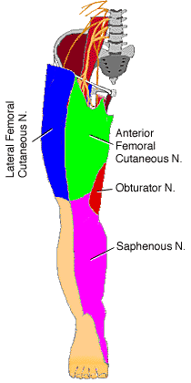

The cutaneous branches of the lumbar plexus: lateral femoral cutaneous, obturator, anterior femoral cutaneous and saphenous nerves.
|

The cutaneous branches of the lumbar plexus: lateral femoral cutaneous, obturator, anterior femoral cutaneous and saphenous nerves. |